Actual ANSI renderer output, software rasterized. The default view is wider, the sky has one coordinate system, and swing effects have shorter proportions. The final row comes from native terminal input. Poses in the sky/world fixtures are staged. These images do not measure a terminal emulator's frame latency or prove human game-feel acceptance. Evidence, reproduction and limits.
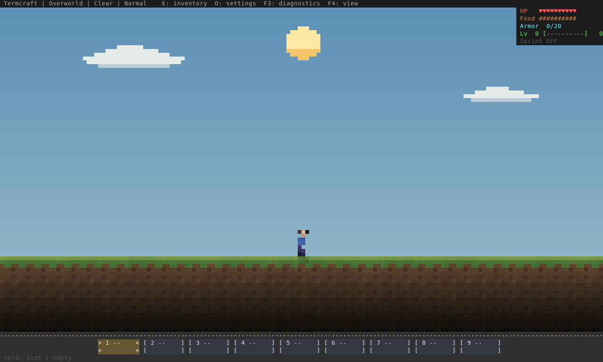
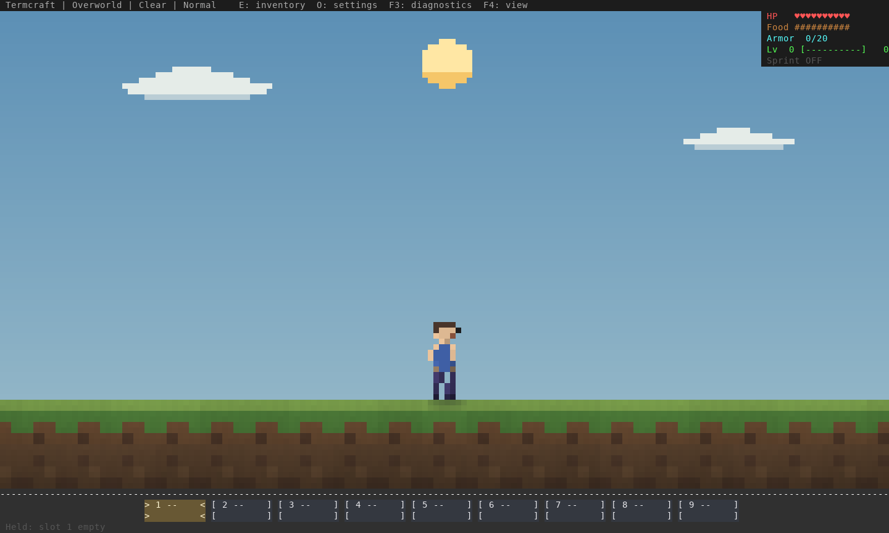
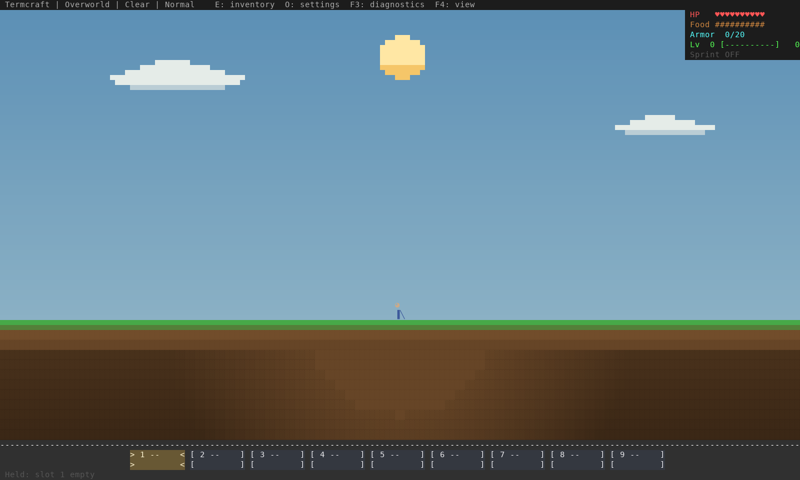
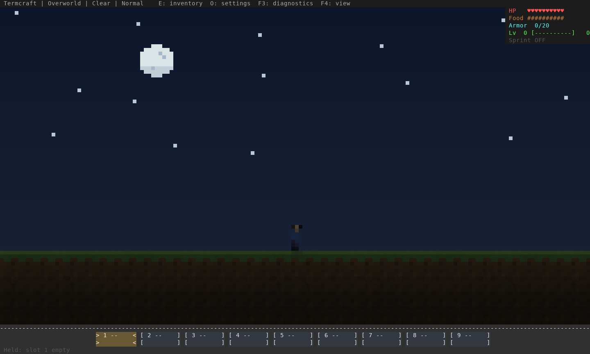
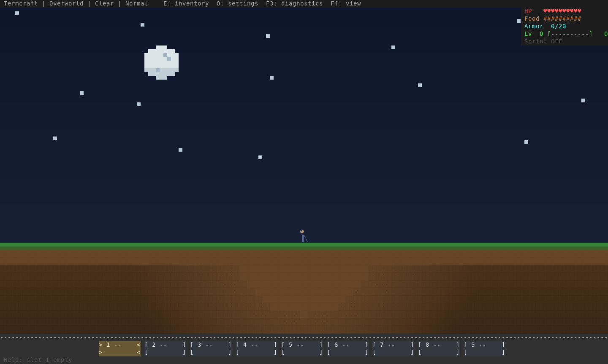
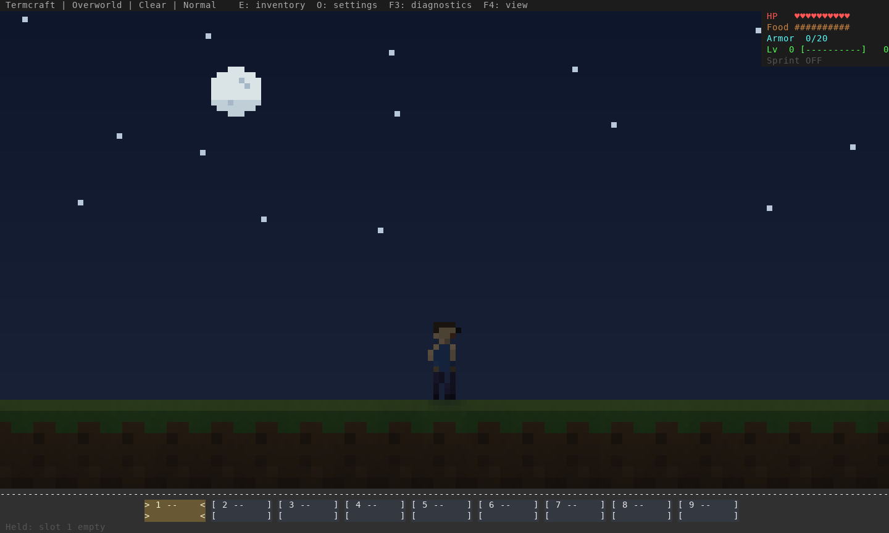
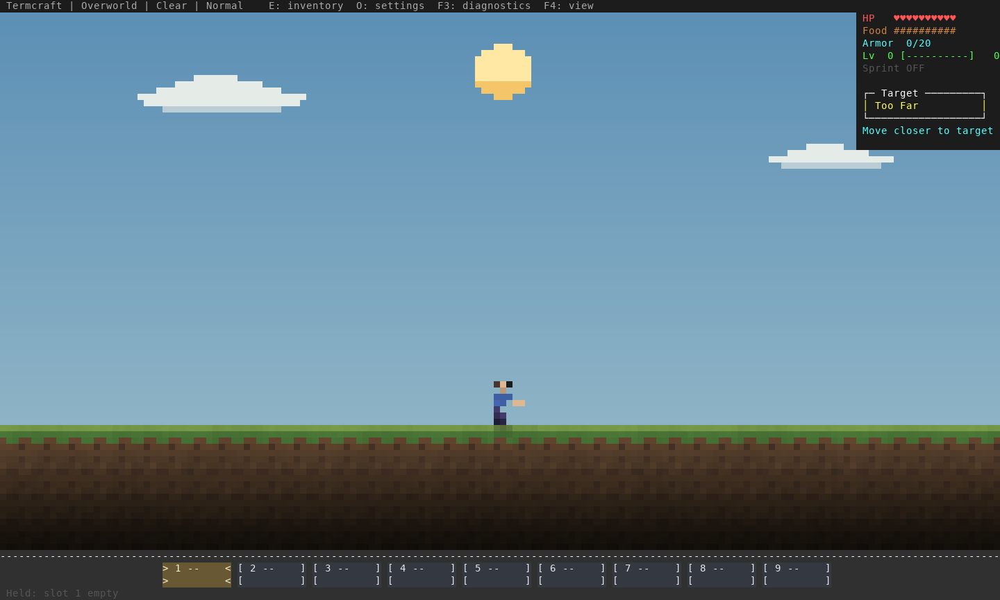
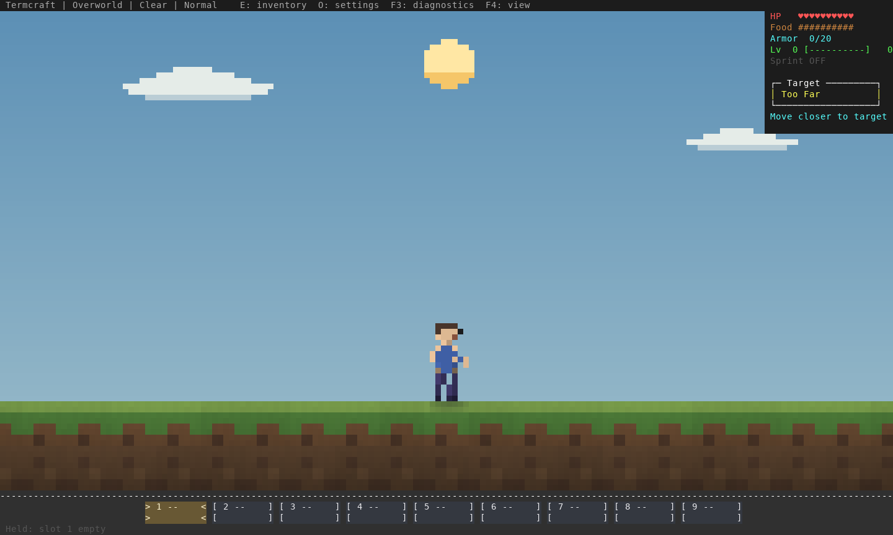
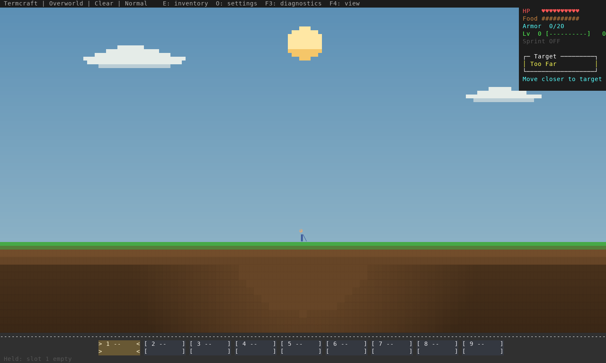
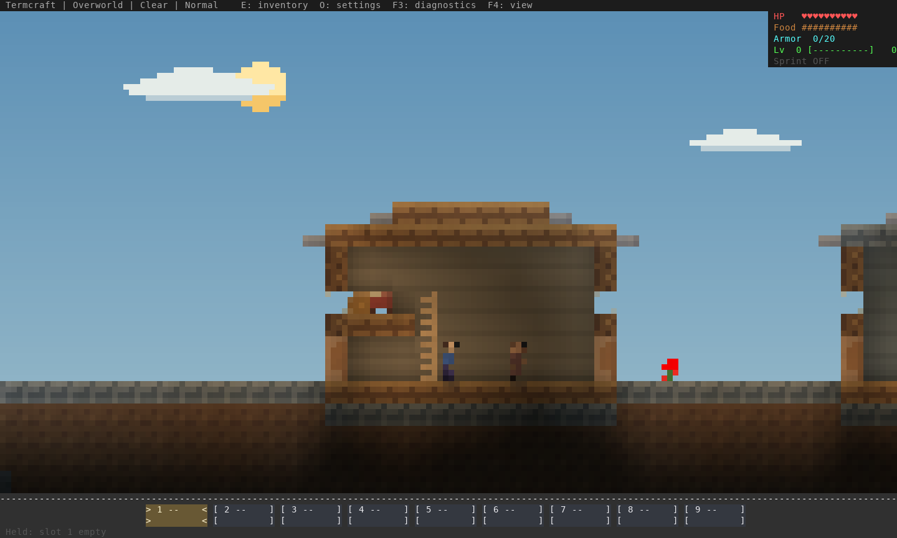
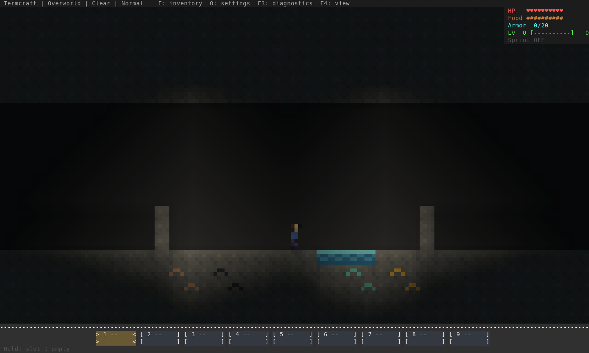
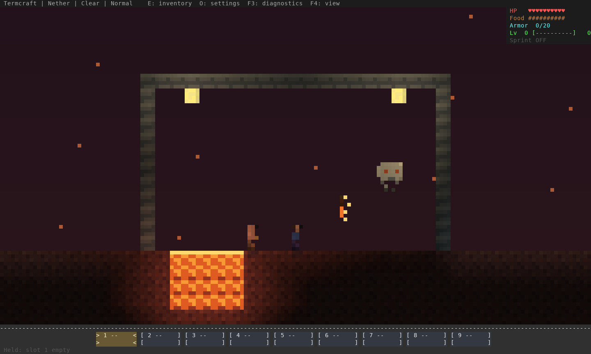
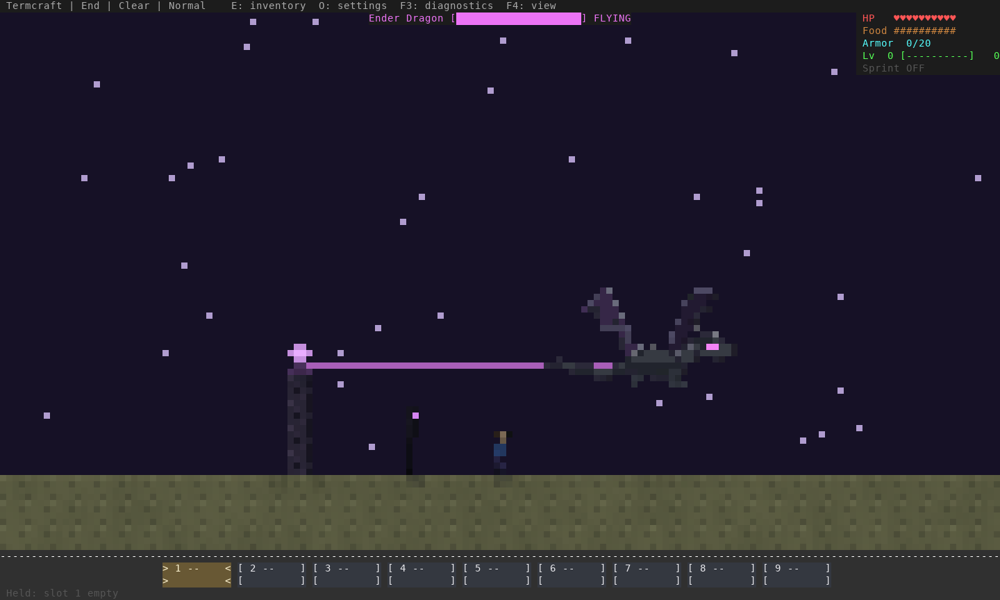
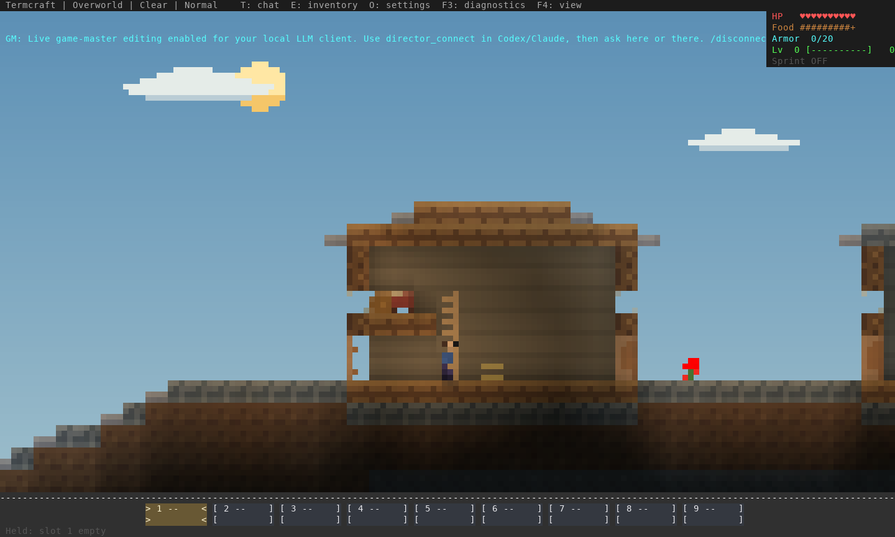
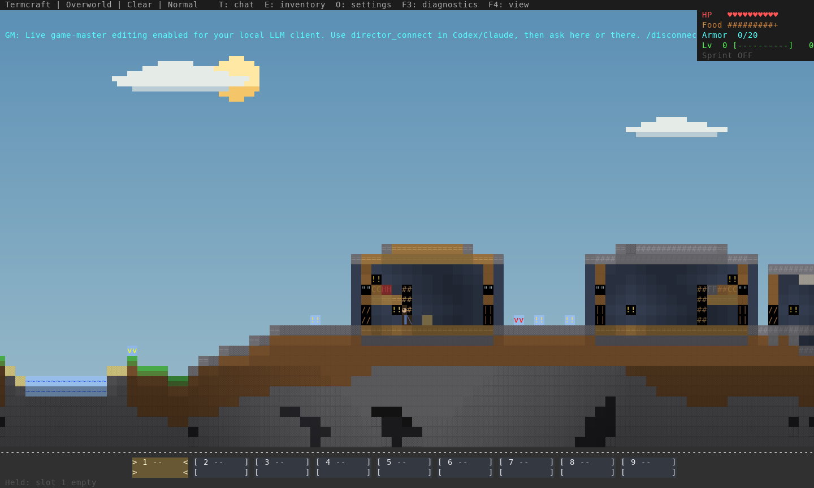
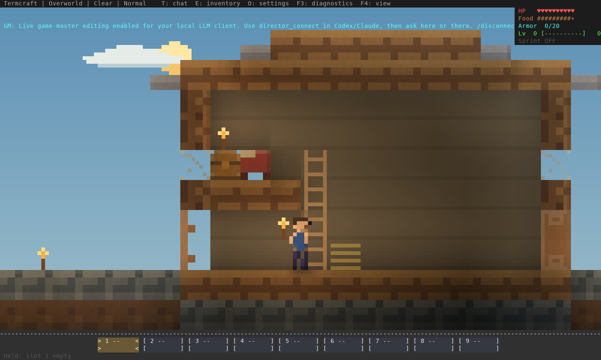